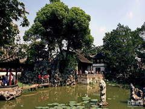

More Website Templates @ cssmoban.com - February 10, 2014!
详文

更多风景
狮子林为苏州四大名园之一，至今已有672多年的历史。元代至正二年，元末名僧天如禅师惟则的弟子“相率出资，买地结屋，以居其师。”因园内“林有竹万固，竹下多怪石，状如狻猊(狮子)者”；又因天如禅师惟则得法于浙江天目山狮子岩普应国师中峰，为纪念佛徒衣钵、师承关系，取佛经中狮子座之意，故名“师子林”、“狮子林”。洞壑深遂而盛名于世，素有“假山王国”之美誉。
狮子林假山，群峰起伏，气势雄浑，奇峰怪石，玲珑剔透。假山群共有九条路线，21个洞口。横向极尽迂回曲折，竖向力求回环起伏。游人穿洞，左右盘旋，时而登峰巅，时而沉落谷底，仰观满目迭嶂，俯视四面坡差，神妙夺天工。”“人道我居城市里，我疑身在万山中”，就是狮子林的真实写照。 建筑可分祠堂、住宅与庭园三部分，现园子的入口原是贝氏宗祠，有硬山厅堂二进，檐高厅深，光线暗淡，气氛肃穆。住宅区以燕誉堂为代表，是全园的主厅，建筑高敞宏丽，堂内陈设雍容华贵。沿主厅甫北轴线上共有四个小庭园燕誉堂甫以白、紫玉兰和牡丹花台为春景庭园，亲切明快。堂北庭园植樱花二株。更添春意。小方厅为歇山式，厅内东西两侧空窗与窗外腊梅、甫天竹、石峰共同构成“寒梅图”和“竹石图”，犹如无言小诗，点活了小小方厅。狮子林的漏花窗形式多样，做功精巧，尤以九狮峰后“琴”、“棋”、“书”、“画”四樘和指柏轩周围墙上以自然花卉为题材的泥塑式漏花窗为上品。而空窗和门洞的巧妙运用，则以小方厅中这两幅框景和九狮峰院的海棠花形门洞为典型，九狮峰院以九狮峰为主景，东西各设开敞与封闭的两个半亭，互相对比，交错而出，突出石峰。再往北又得一小院，黄杨花台一座，曲廊一段，幽静淡雅。这种通过院落层层引入，步步展开的手法，使空间变化丰富，景深扩大，为主花园起到绝好的铺垫作用。主花园内荷花厅、真趣亭傍水而筑，木装修雕刻精美。石舫是混凝土结构，但形态小巧，体量适宜。暗香疏影楼是楼非楼，楼上走廊可达假山，设计颇具匠心。飞瀑亭、问梅阁、立雪堂则与瀑布、寒梅、修竹相互呼应，点题喻意，回味无穷。扇亭、文天样碑亭、御碑亭由一长廊贯串，打破了南墙的平直、高峻感。主花园的建筑主要分布在北部，前后错落，形式多变，但由于建造年代的不同和贝氏在重建时对园林的理解不同，在建筑材料的运用和体量比例上看，旱船过于写实，问梅阁体量过大，见山楼外形中西结合，甚至有混凝土六角亭，建筑风格不够统一。 入园，便见玲珑石笋、石峰、丛植牡丹及白玉兰，与“立雪堂”背面侧窗和谐统一，使框景更趋完整，形成进入庭院前视觉上的美感，同时喻“玉堂富贵”之意。并有蔽外隐内之含义而景深意远。庭院北是主体建筑高敞宏丽的鸳鸯厅。南厅名“燕誉堂”，出自《诗经》，意为名高禄重安闲快乐。燕誉堂为全园主厅，高敞宏丽。堂屋门上有“入胜”、“通幽”、“听香”、“读画”、“幽观”、“胜赏”砖刻匾额。北厅称“绿玉青瑶之馆”，出自元画家倪云林诗中，“绿水”指水，“青瑶”指假山。中堂屏风南面刻《重修狮子林记》，记述贝氏1917―1926年间重修“狮子林”的经过。北面刻《狮子林图》，寺峰古柏，飞瀑层楼。厅内陈设精致华贵。厅的前廊西侧可通“立雪堂”，后廊西侧门宕通假山洞穴而进入“卧云厅”，在后为小方厅，厅名“园涉成趣”，其西侧辟门，可登假山。以鸳鸯厅为中心，面向四方的布局，颇为巧妙。厅前有“息庐”、“安隐”砖刻。 院内湖石、花台、小树组成一景。穿越小方厅，见院中花台上的巨峰气势雄伟，由九头不同姿态的狮子组成。峰北院墙漏窗的框形各异，并分别套入琴棋书画图案，流畅明快。向西可到指柏轩，为二层阁楼，四周有庑，高爽玲珑。古五松园在指粕轩之西，中间隔一竹园。园里旧有五棵大古松，霜干虬枝，亭亭似盖，所以狮子林从前曾名五松园。转弯向南到飞瀑亭。这里为全园最高处，用湖石迭成三迭，下临深渊，上有水源，开动机钮，即成人工瀑布。更多风景